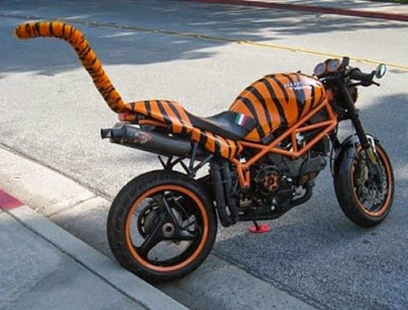
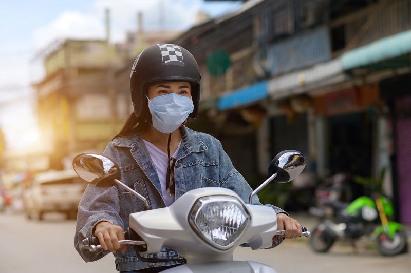

| MOTO | |
| ANTES | DESPUÉS |
Era el 2do transporte privado más utilizado, por debajo del automóvil. Su uso era principalmente para transportarse a sitios de trabajo y escuelas  |
Por lo mismo que el carro, su uso a decaído, debido a que nuevas tecnologías han ido surgiendo o siendo más reconocidas en tiempos de confinamiento, ej. Uber Eats, Rappi, etc.  |